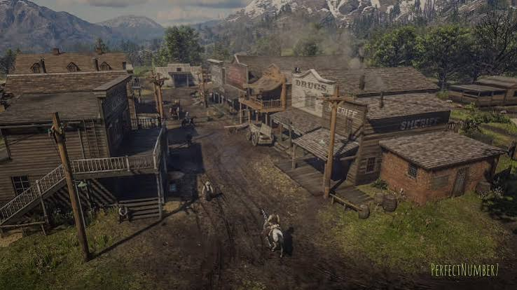
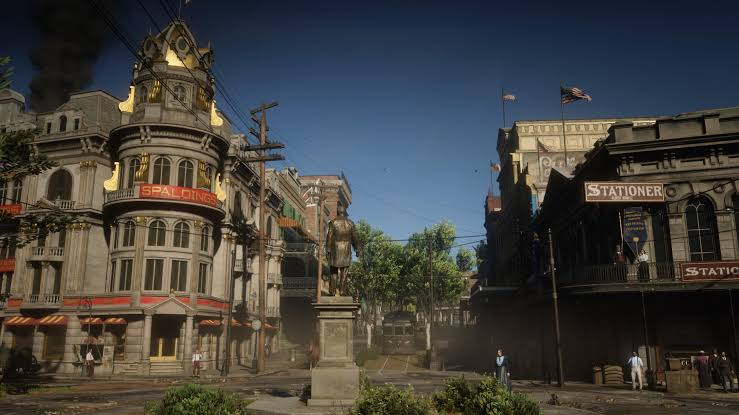
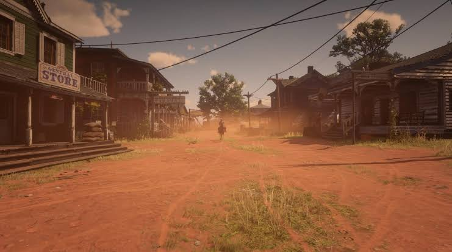
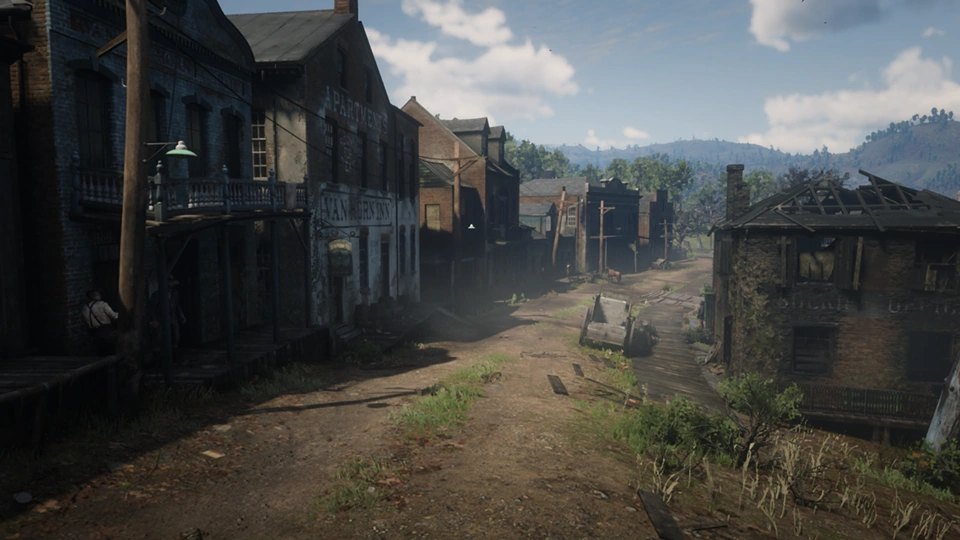
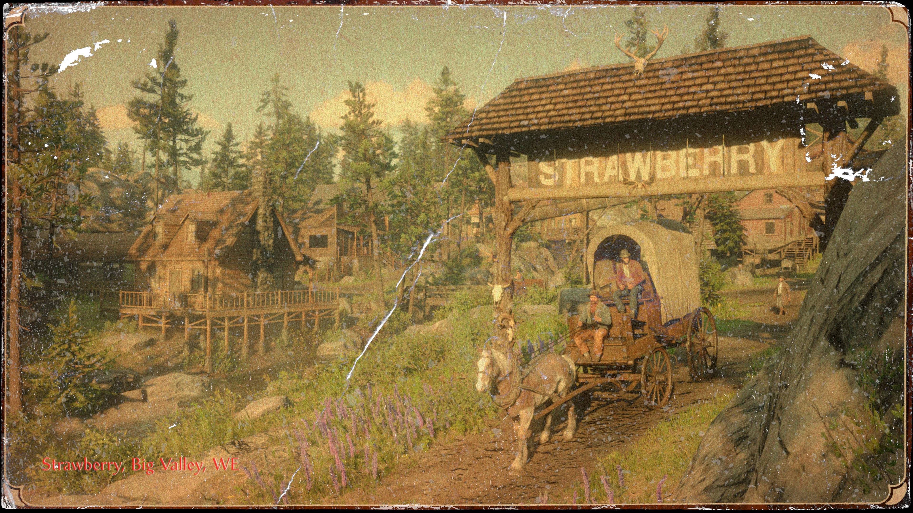

Valentine — O Coração Pecuário do Velho Oeste

Ubicada na região de The Heartlands no estado de New Hanover, Valentine é a quintessência da clássica cidade do Velho Oeste. Famosa por seus leilões de gado, ela atrai peões, comerciantes, caubóis e fora da lei vindos de todos os cantos do país, todos buscando ganhar algum dinheiro ou arrumar confusão nos saloons locais.
Valentine é o primeiro grande centro urbano visitado pela gangue Van der Linde após descerem das montanhas nevadas. Suas ruas não pavimentadas estão constantemente cobertas por uma mistura densa de lama e esterco. A cidade serve como um símbolo da sobrevivência rústica, onde a lei é frágil e a violência pode estourar a qualquer momento por causa de um jogo de cartas ou uma briga de bar.
Saint Denis — A Joia da Modernidade Industrial

Situada no estado sulista de Lemoyne, Saint Denis representa o contraste absoluto com o resto do mundo selvagem. Inspirada na histórica Nova Orleans, é uma metrópole vibrante, cosmopolita e barulhenta que atua como a principal rota de comércio e entrada para o país ao longo do rio Lannahechee. A cidade é um caldeirão cultural onde ricos industriais, políticos corruptos, marinheiros, imigrantes europeus e gangues de rua dividem o mesmo espaço.
Com ruas pavimentadas, iluminação a gás, bondes elétricos, teatros luxuosos e uma força policial altamente armada, Saint Denis é a prova viva de que a era dos pistoleiros chegou ao fim. Para a gangue Van der Linde, a cidade é uma armadilha sufocante de concreto e fumaça de fábrica, onde a liberdade do campo aberto não tem espaço para existir.
Rhodes — A Farsa das Dinastias do Sul

Localizada na região de Scarlett Meadows em Lemoyne, Rhodes aparenta ser uma pacata e aristocrática cidade do sul americano. No entanto, por trás de suas fachadas bonitas e estradas de terra avermelhada, a cidade está corroída pela corrupção e por um ódio histórico alimentado pela rivalidade mortal entre duas antigas famílias proprietárias de terras: os Braithwaite e os Gray.
Ambas as famílias enriqueceram no passado com o cultivo de algodão e a produção de uísque clandestino, e continuam disputando o controle da região mesmo após o fim da Guerra Civil. Arthur Morgan e a gangue tentam manipular essa rivalidade jogando uma família contra a outra em busca de um suposto ouro escondido, desencadeando um dos capítulos mais dramáticos e sangrentos da narrativa.
Annesburg e Van Horn — A Exploração e a Lei da Selva

Localizadas na perigosa região de Roanoke Ridge, Annesburg e Van Horn representam o lado mais sombrio da revolução industrial e da fronteira sem lei. Annesburg é uma cidade mineradora sombria e poluída, onde gerações de trabalhadores arriscam suas vidas nas minas de carvão sob salários miseráveis e condições desumanas impostas por corporações implacáveis.
A pouca distância dali fica o entreposto comercial de Van Horn. Diferente de outras cidades, Van Horn não possui xamã, xerife ou qualquer tipo de força policial para manter a ordem. É um porto decadente governado unicamente pela violência: se você desrespeitar ou atacar um habitante no local, a população inteira sacará suas armas para eliminá-lo imediatamente.
Strawberry e Blackwater — Turismo e a Fronteira Urbana

Em West Elizabeth, encontramos o contraste entre Strawberry e Blackwater. Strawberry era um pequeno vilarejo madeireiro nas montanhas de Big Valley até a chegada de seu novo prefeito exótico, que busca transformar a cidadezinha em um refúgio cultural e turístico luxuoso para ricaços da Costa Leste, gerando desconfiança entre os moradores nativos.
Já a famosa cidade portuária de Blackwater é o portão de entrada para o oeste moderno. Foi em Blackwater que o fatídico assalto a banco da gangue Van der Linde deu errado antes dos eventos do jogo começarem, tornando a cidade um território proibido e altamente patrulhado pela agência de detetives Pinkerton durante grande parte da campanha.